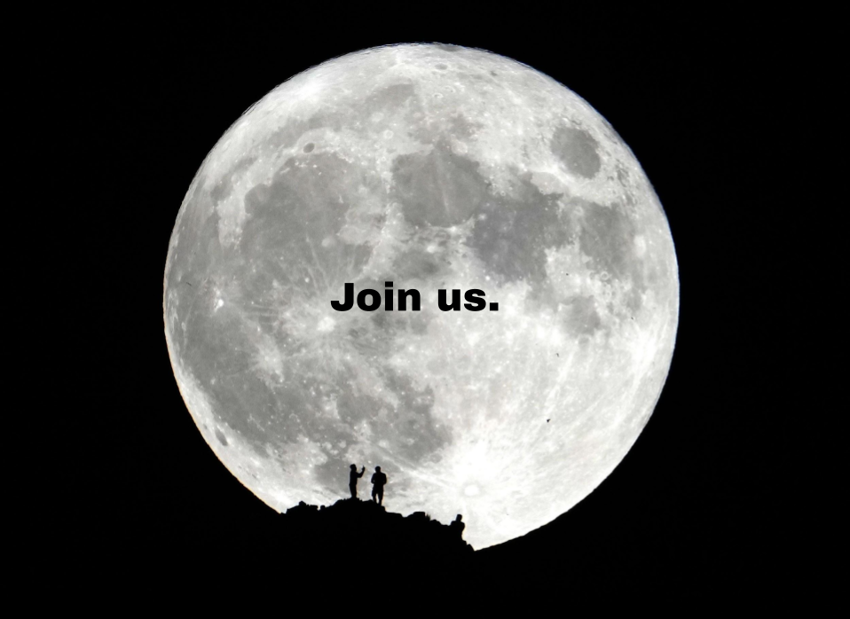

Join the Unity
We welcome all those who feel the pull of the Moon. Whether you are just beginning to seek or have long sensed its power, the Circle of the Moon is open to all those who wish to explore deeper. Through guided meditation, shared rituals, and a growing community, we build toward a greater understanding of ourselves and our place in the universe.
Membership is more than a title - it is a calling. It requires dedication to the truth the moon reveals, a commitment to aligning with its cycles, and an openness to the transformation that unity brings.
How to Join
If you feel the call, we invite you to connect with us. Joining is simple, yet profound. Begin by exploring our community gatherings, participate in our lunar meditations, and let your journey unfold naturally. There are no strict rules - only the desire to be open, to grow, and to unify.
The Moon's light is always there, waiting for you to see. Embrace it, and you'll find yourself in harmony with those who share this vision.
Contact Us
For more information on how to attend our gatherings, participate in rituals, or learn about membership, reach out to us. The path is open to all who seek it.